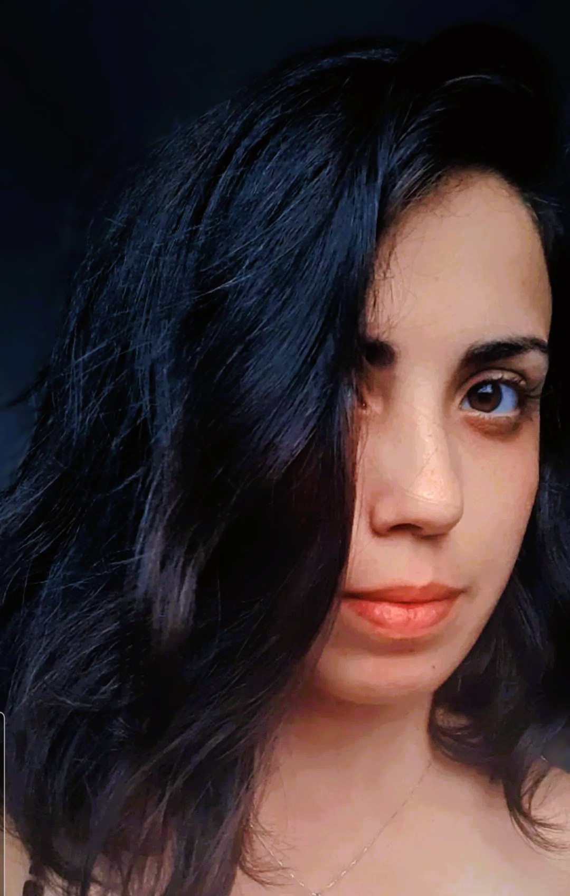

👋 Olá! Sou a Pri, mãe de duas crianças incríveis, apaixonada por desafios e pelo que há de bonito na vida – sejam histórias envolventes nos livros, momentos em família ou soluções criativas na programação. Gosto de me divertir jogando com meu marido e amigos, além de carregar desde pequena uma grande admiração pela cultura asiática. 📚🎮 Minha jornada na tecnologia começou em 2021, mas foi em 2024 que decidi me aprofundar de vez nesse universo. Aprendi Java, Spring Boot, SQL, criação de APIs e ferramentas como HTML, CSS, JavaScript (incluindo Tailwind, DOM, ReactJS e TypeScript), sempre com muita dedicação e sede de conhecimento. Também me apaixonei por metodologias como Scrum, que ajudam a transformar ideias em realidade. Conciliar estudos com casa, filhos e responsabilidades me trouxe lições valiosas. Minha persistência foi posta à prova muitas vezes, mas minha orientação para o futuro, comunicação, responsabilidade pessoal e proatividade sempre me ajudaram a seguir em frente. Obrigada por dedicar um tempinho para me conhecer melhor! Se quiser saber mais sobre meu trabalho, projetos e interesses, fique à vontade para acessar minhas redes sociais (está logo abaixo do meu vídeo favorito).
Quem é a Priscila?
